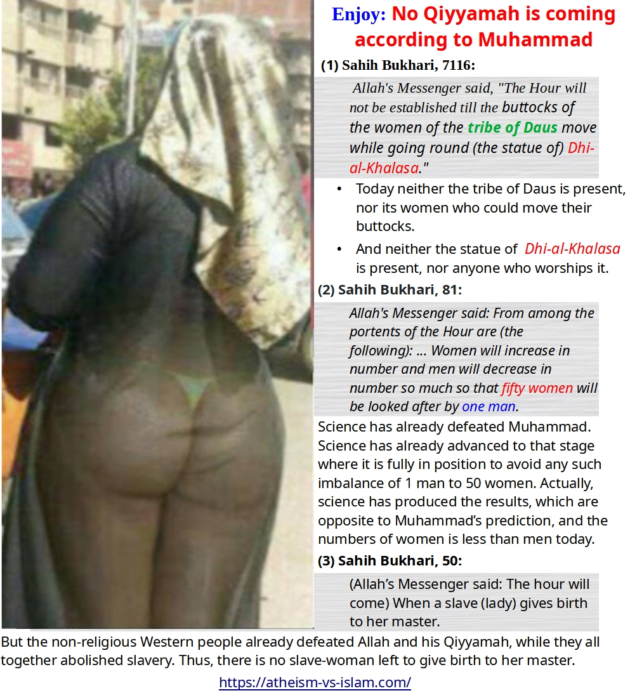

(1) Sahih Bukhari, 7116:
Allah's Messenger said, "The Hour will not be established till the buttocks of the women of the tribe of Daus move while going round (the statue of) Dhi-al-Khalasa."
-
Today neither the tribe of Daus is present, nor its women who could move their buttocks.
-
And neither the statue of Dhi-al-Khalasa is present, nor anyone who worships it.
(2) Sahih Bukhari, 81:
Allah's Messenger said: From among the portents of the Hour are (the following): ... Women will increase in number and men will decrease in number so much so that fifty women will be looked after by one man.
Science has already defeated Muhammad. Science has already advanced to that stage where it is fully in position to avoid any such imbalance of 1 man to 50 women. Actually, science has produced the results, which are opposite to Muhammad’s prediction, and the numbers of women is less than men today.
(3) Sahih Bukhari, 50:
(Allah’s Messenger said: The hour will come) When a slave (lady) gives birth to her master.
But the non-religious Western people already defeated Allah and his Qiyyamah, while they all together abolished slavery. Thus, there is no slave-woman left to give birth to her master.
(4) Sahih Muslim, 2953b:
Anas b. Malik reported that a person asked Allah's Apostle: When would the Last Hour come? Thereupon Allah's Messenger (way peace be upon him) kept quiet for a while. Then looked at a young boy in his presence belonging to the tribe of Azd Shanu'a and he said: If this boy lives he would not grow very old till the Last Hour would come to you. Anas said that this young boy was of our age during those days.
That young boy not only grew old, but he also died about 1400 years ago, but no last hour came before him becoming old. Now you could better decide if it was a Divine Revelation from heaven, or a Human Drama from Muhammad.
Objection: But the Sex Slavery still exists:
An apologist came up with this excuse:
Sex Slavery still exists, and the Prophet Muhammad was talking about it.
False.
Forced Prostitution is not ONLY the problem of today, but it existed throughout the history (including Muhammad's era), where poor women were forced to do prostitution by criminals.
If Muhammad was meant to talk about sex slavery, then he would have simply used the word forced prostitution.
But it is clear that Muhammad was talking about something, which was legal during his era, and was not misused. But that same thing will be CHANGED and will be misused in the FUTURE, and will serve as a sign of the last hour.
Another apologist came up with this excuse:
This hadith means that mothers will give birth to children that will enslave them. Like, children being so spoiled to the point they are treating their parents as slaves. Basically, a downfall of morality.
A lame excuse, while Muhammad could have simply told it in normal words that a mother (either slave or a free Woman) will give birth to a child, who will act like a master to her.
That is why, none of the Muslim of the last 1400 years ever come up of this meaning of this Hadith, and kept it to slave mother only, and not to the free Muslim women and their children.
Objection: The temple of Dhul-Khalasa was indeed found
Modern Islam apologists make some vague claims that Dhul-Khalasa was found and destroyed 2 more times. (1st time around 1800 and 2nd time in 1915)
We already know many civilizations existed in ancient Arabia, and their ruins still exist there. Muslims are free to make stories on their own, and there is no way to confirm them. It is the same as Muhammad told stories of heavens and throne of Allah, but it was impossible to confirm or deny them.
Moreover:
- If the people of Daus tribe still exists today, then it means they existed throughout the history (after the death of Muhammad).
- And if they were found worshipping in those ruins in 1800 and 1915, then it also means they were freely worshipping it during the last 14 centuries after the death of Muhammad.
So, why then the last hour has not come up till now?
According to Muhammad's prediction, then the last hour should have come centuries ago, while the people of Daus were able to worship in the ruins for centuries.
Wise people already told, you have to make hundreds of lies more, in order to hide a single lie.
Objection: Muhammad didn't mean the LAST HOUR, but he meant the death of him companions, who asked this question
Islamic apologists come up with this excuse:
What is meant by the coming of the Hour in the above narrations is the coming of the Hour of the companions who were the audience, which means their death, as in the narration reported by 'Aa'ishah: "He will not grow old before your Hour would come to you.''
Obviously, it is a lame excuse.
In the remaining whole Islamic literature, the Last Hour is used to mean Qiyyamah. It has nothing to do with the death of individual people.
Please ponder upon it, what was the benefit of such a useless Question & Answer? Everyone knows when young people grow up, then the old people die before the death of young people.
All Muslims who can think, they know the TRUTH here. Unfortunately, religion make people blind and deaf. These Muslims don't read these facts in order to see the truth and to do justice, but they read them in order to make lame excuses for their prophet.


 Hassan Radwan
Hassan Radwan